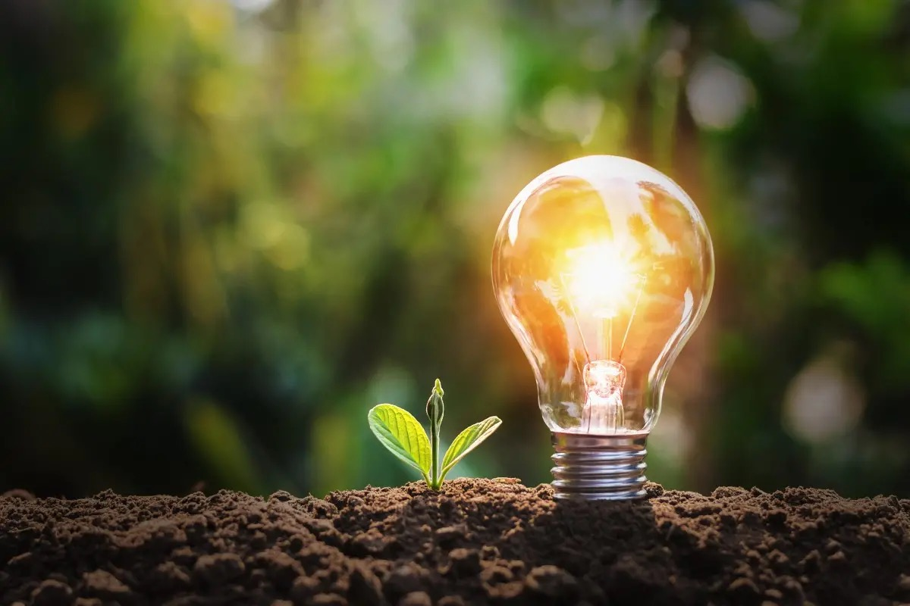
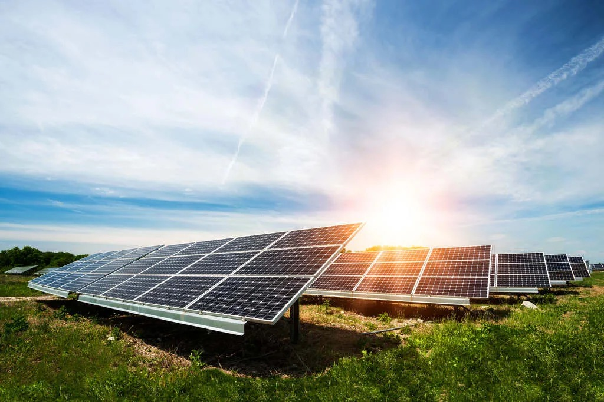

ODS 7 - Energía asequible y no contaminante
“La energía del futuro está en nuestras manos: limpia, accesible y sostenible para todos.”


El cambio climático es uno de los mayores problemas actuales y está relacionado con el uso de energías contaminantes como el carbón o el petróleo. Estas fuentes generan gases de efecto invernadero que dañan el medio ambiente y afectan a la salud de las personas.
Esta problemática afecta a toda la población, pero especialmente a las nuevas generaciones, que vivirán las consecuencias en el futuro. Además, muchas zonas todavía dependen de energías no sostenibles por falta de alternativas accesibles.
Durante la investigación, se ha observado que existe una falta de concienciación y de soluciones simples que puedan aplicarse en la vida cotidiana. Por ello, es importante desarrollar propuestas que acerquen la energía sostenible a las personas de forma práctica y comprensible.
La propuesta consiste en fomentar el uso de energías renovables mediante soluciones sencillas en el día a día, como pequeños sistemas solares domésticos o hábitos de consumo responsable.
La originalidad del proyecto está en su enfoque educativo y accesible, ya que no se centra solo en grandes infraestructuras, sino en acciones que cualquier persona puede entender y aplicar.
Entre los beneficios destacan la reducción de la contaminación, el ahorro energético y económico a largo plazo, y la mejora de la calidad de vida. Además, se contribuye a la protección del medio ambiente y a la lucha contra el cambio climático.
En comparación con otras soluciones, esta propuesta es más cercana al usuario, más fácil de implementar y promueve la participación activa de la sociedad.
La solución consiste en el uso de pequeños paneles solares junto con una campaña de concienciación.
El funcionamiento se basa en el uso de pequeños paneles solares que pueden alimentar dispositivos básicos, demostrando de forma práctica cómo funciona la energía renovable. Como prototipo, se puede presentar un esquema, maqueta o simulación del sistema.
Durante el proceso, se ha comprobado que este tipo de soluciones son viables a pequeña escala y pueden servir como primer paso hacia un cambio mayor.
La propuesta se ofrece a estudiantes y familias como una herramienta educativa, promoviendo su uso en hogares y centros educativos. Para garantizar su sostenibilidad, se basa en recursos renovables, bajo coste y fácil mantenimiento.
Para llevar a cabo esta propuesta, sería importante contar con la colaboración de diferentes agentes.
Por un lado, los centros educativos pueden ayudar a difundir el proyecto y aplicarlo en el aula como herramienta de aprendizaje. Los profesores aportarían conocimientos y apoyo en su desarrollo.
También podrían participar instituciones públicas, como ayuntamientos, facilitando recursos o promoviendo iniciativas relacionadas con la sostenibilidad.
Además, organizaciones medioambientales podrían contribuir con información y asesoramiento, reforzando la credibilidad del proyecto.
Finalmente, la participación de la comunidad es fundamental, ya que son los usuarios quienes aplicarán estas soluciones en su vida diaria. Cada uno aporta compromiso y concienciación, lo que permite generar un impacto real.
Durante este proyecto he aprendido la importancia de la energía sostenible y su impacto en el medio ambiente.
También he desarrollado habilidades de investigación, organización de la información y pensamiento crítico.
Además, he comprendido que pequeñas acciones pueden contribuir a cambios importantes, y que la concienciación social es clave para avanzar hacia un futuro más sostenible.